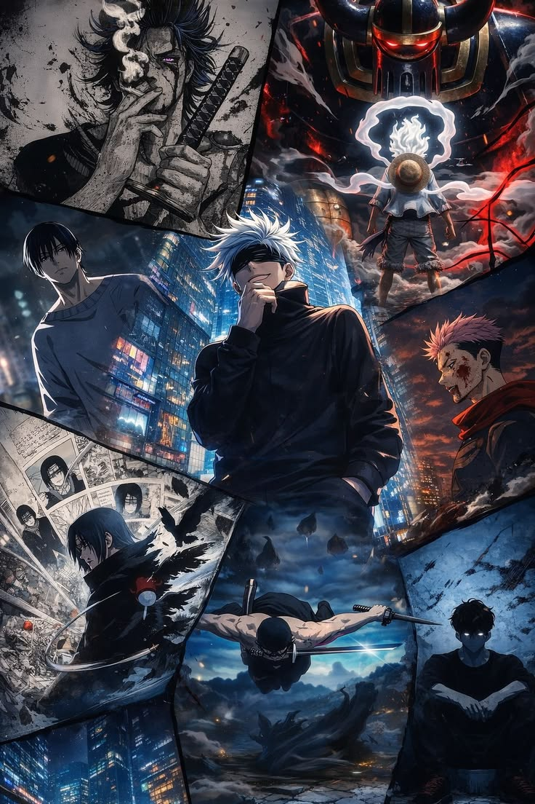
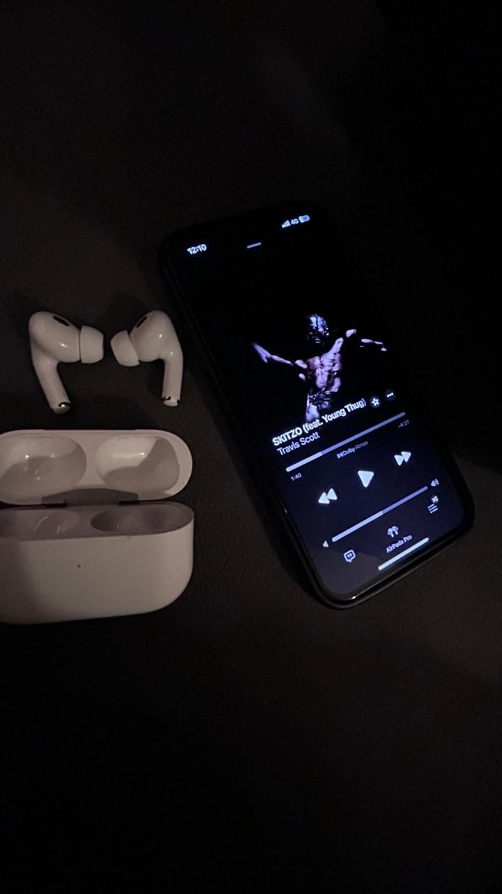
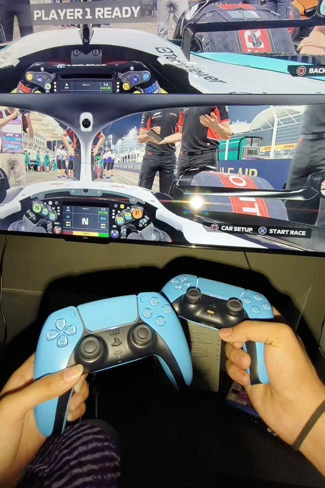
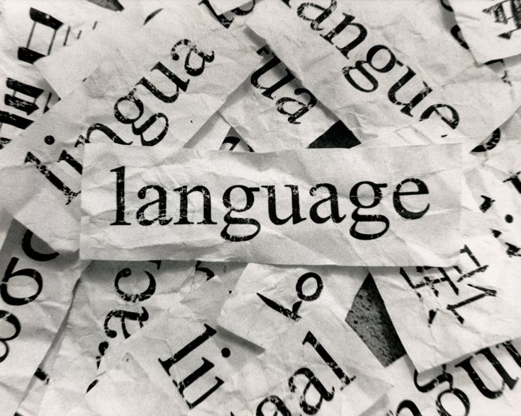

Watching Anime
I love watching anime. it gives me motivation and energy to keep up and follow my goals. also it teaches me alot of thinks like emotional controling or how to treat with people and also it is so enjoyable for me. i love demon slayer, naruto, jjk, deathnote and etc
Reading book
I love reading book. because it helps me alot to improve my skills and also my communication with other people. i love reading improvement book like: magic of big thinking to tell you the truth i read magic of big thinking for 4 times. and every time i read it. it gives me a new lesson. and i have read alot of books
Walking and talking
the most enjoyable interest i have that is walking in a good nature and talking about work or idk anything with bro. or with my close freind or family that is so so enjoyable for me. it helps me to improve my communication and also help me to calm alot and it is my recomendition for you to do this because it is so enjoyable.

Listen to music
I love listening to viral music. idk i think because i watch alot of edit on that kinds of music and after that i love to listen to them. i mostly like the calmer songs and sometimes i also listen to phonk. my favorites music is sprinter, took her to the o, playdate, Roi, golden brown most of times. when i am working i listen to them.

Playing game
Sometimes i also play video games with my freind and that is so enjoyable i don't have alot of information about games but my favorate game is fifa, taken, resident evil and pupg mobile. 2 or 3 years ago i played pupg mobile alot maybe in one day i spend 8 hours of my time playing pupg mobile but now i compeletly don't play but sometimes when i be in holyday i do it.

Coding
i really like coding and it is my work as a student to learn code and make projects. i spend most of my time to learning codes and doing coding that is so enjoyable and also helpful for me i did alot of project in my career. i work with c#: windows form, website: html,css,javascript,jquery, and sqlserver. in this days i started the c++ and flutter
More Info

Language
overall i know two Languages 1: persian 2: english. Persain: persain is my mother language and that i normal that i speak persain. English: i can speak english very well. i garatuated from toelf galaxy course. i did't take the toefl exam. but if i did it. 100 percent i will get more than of 90 scores. but because of some problems i could't do that.
More Info

Holy quran
Maybe 5 years ago when i started holy quran. it was my goal to be an international qari in the world and that was so amazing. i did it for 2 years and also i release it because of my lessons i got 3 certifacates from that and it was so amazing. i try to repeat holy quran every weekend because i don't want to forget my skills and my voice.
More Info